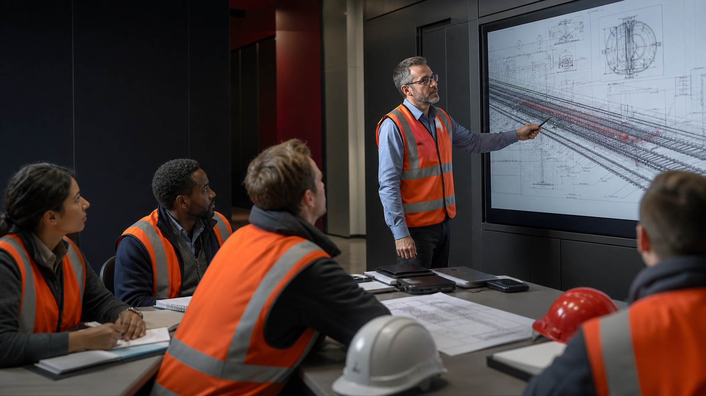

Asistencia técnica para la planificación de infraestructura ferroviaria
Entidad pública · Consulta de oportunidad
SOFEIN CONSULTING
Visión estratégica, formación y actualidad para quienes toman las decisiones que mueven el sector.
Descubre nuestros servicios →NUESTROS WEBINARS
Sesiones online con expertos para analizar tendencias, normativa y decisiones que marcarán el futuro de la movilidad.
Conocer los próximos webinars →

FORMACIÓN
Programas prácticos impartidos por profesionales en activo para trasladar conocimiento técnico a proyectos y operaciones reales.
Explorar formación →MOVILIDAD SOSTENIBLE
Una lectura divulgativa de sus oportunidades para el ecosistema ferroviario, con la fuente oficial siempre a mano.
Consultar la ley en BOE ↗
LICITACIONES
Una muestra del tipo de oportunidades que ayudamos a identificar y preparar.
Entidad pública · Consulta de oportunidad
Operador ferroviario · Consulta de oportunidad
Administración · Consulta de oportunidad
HABLEMOS
Cuéntanos qué necesitas y el equipo de SOFEIN consulting se pondrá en contacto contigo.
consulting@sofein.digital →